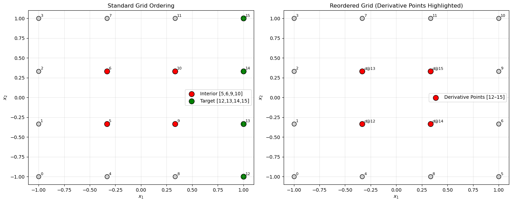
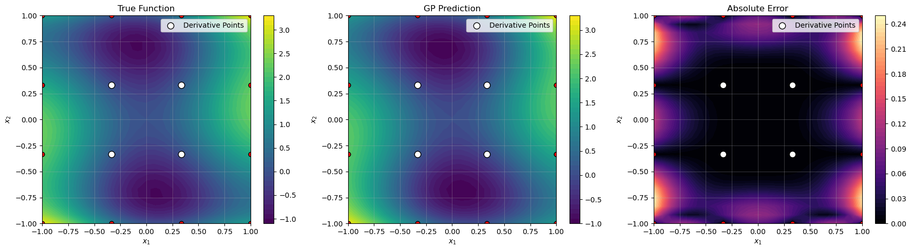

Sparse Derivative-Enhanced GP Tutorial: 2D Example#
This tutorial demonstrates a 2D sparse, derivative-enhanced Gaussian Process (DEGP) model using pyOTI-based automatic differentiation. It focuses on constructing a small 2D grid, strategically assigning derivative points, and visualizing model accuracy.
Key features#
2D grid-based training data generation
Strategic point reordering for derivative placement
Automatic differentiation using pyOTI
Contour visualization of the true function, GP prediction, and error
Highlighting of derivative points in the plots
Note
This example uses the Six-Hump Camelback function as a test case.
—
Import required packages#
import numpy as np
import itertools
import matplotlib.pyplot as plt
import pyoti.sparse as oti
from wdegp.wdegp import wdegp
import utils
—
Configuration#
All configuration parameters are defined as simple variables. This includes derivative order, kernel type, and other hyperparameters.
n_order = 2
n_bases = 2
normalize_data = True
kernel = "SE"
kernel_type = "anisotropic"
n_restarts = 15
swarm_size = 200
np.random.seed(42)
Define the Six-Hump Camelback function#
def six_hump_camelback(X, alg=np):
"""
Six-hump camelback function, a 2D benchmark function with multiple local minima.
"""
x1 = X[:, 0]
x2 = X[:, 1]
return (
(4 - 2.1 * x1**2 + (x1**4) / 3.0) * x1**2
+ x1 * x2
+ (-4 + 4 * x2**2) * x2**2
)
—
Generate 2D training grid and derivative point assignment#
We construct a (4 times 4) grid, then reassign interior points for derivative computation.
def create_training_grid(lb=-1.0, ub=1.0, num_points=4):
# Uniform 2D grid
x_vals = np.linspace(lb, ub, num_points)
y_vals = np.linspace(lb, ub, num_points)
X = np.array(list(itertools.product(x_vals, y_vals)))
# Interior and target points
interior = [5, 6, 9, 10]
target = [12, 13, 14, 15]
# Reorder points (swap interior with target)
X_reordered = X.copy()
X_reordered[interior], X_reordered[target] = X[target], X[interior]
# Submodel: derivatives at [12, 13, 14, 15]
submodel_idx = [target]
# First and second order derivatives in 2D
deriv_spec = [[[[1,1]], [[2,1]]], [[[1,2]], [[2,2]]]]
deriv_specs = [deriv_spec]
return X_reordered, submodel_idx, deriv_specs, interior, target
X_train, submodel_indices, derivative_specs, interior, target = create_training_grid()
X_train[:5] # Show first few reordered points
array([[-1. , -1. ],
[-1. , -0.33333333],
[-1. , 0.33333333],
[-1. , 1. ],
[-0.33333333, -1. ]])
—
Visualize grid reordering#
def visualize_reordering(X_train, interior, target, lb=-1.0, ub=1.0, num_points=4):
x_vals = np.linspace(lb, ub, num_points)
y_vals = np.linspace(lb, ub, num_points)
X_standard = np.array(list(itertools.product(x_vals, y_vals)))
fig, (ax1, ax2) = plt.subplots(1, 2, figsize=(15, 6))
# Standard grid
ax1.scatter(X_standard[:,0], X_standard[:,1], c='lightgray', s=80, edgecolor='k')
ax1.scatter(X_standard[interior,0], X_standard[interior,1],
c='red', s=120, edgecolor='k', label='Interior [5,6,9,10]')
ax1.scatter(X_standard[target,0], X_standard[target,1],
c='green', s=120, edgecolor='k', label='Target [12,13,14,15]')
for i, p in enumerate(X_standard):
ax1.text(p[0]+0.02, p[1]+0.02, str(i), fontsize=8)
ax1.set_title("Standard Grid Ordering")
ax1.legend()
ax1.grid(True, alpha=0.3)
# Reordered grid
ax2.scatter(X_train[:,0], X_train[:,1], c='lightgray', s=80, edgecolor='k')
ax2.scatter(X_train[target,0], X_train[target,1],
c='red', s=120, edgecolor='k', label='Derivative Points [12–15]')
for i, p in enumerate(X_train):
label = f"d@{i}" if i in target else str(i)
ax2.text(p[0]+0.02, p[1]+0.02, label, fontsize=8)
ax2.set_title("Reordered Grid (Derivative Points Highlighted)")
ax2.legend()
ax2.grid(True, alpha=0.3)
for ax in (ax1, ax2):
ax.set_xlabel("$x_1$")
ax.set_ylabel("$x_2$")
plt.tight_layout()
plt.show()
visualize_reordering(X_train, interior, target)

—
Prepare training data with derivatives#
def prepare_training_data(X_train, submodel_indices, derivative_specs, func, n_order=2):
y_train_data = []
y_real = func(X_train, alg=np)
for k, point_indices in enumerate(submodel_indices):
X_sub = oti.array(X_train[point_indices])
# Add OTI tags
for i in range(2): # 2D
for j in range(X_sub.shape[0]):
X_sub[j, i] += oti.e(i + 1, order=n_order)
# Evaluate function with hypercomplex perturbations
y_hc = oti.array([func(x, alg=oti) for x in X_sub])
y_sub = [y_real] # base function values
# Extract derivatives
for i in range(len(derivative_specs[k])):
for j in range(len(derivative_specs[k][i])):
deriv = y_hc.get_deriv(derivative_specs[k][i][j]).reshape(-1,1)
y_sub.append(deriv)
y_train_data.append(y_sub)
return y_train_data
y_train_data = prepare_training_data(X_train, submodel_indices, derivative_specs, six_hump_camelback)
print(f"Submodels: {len(y_train_data)}, Arrays per submodel: {len(y_train_data[0])}")
Submodels: 1, Arrays per submodel: 5
—
Build and optimize the GP model#
gp_model = wdegp(
X_train,
y_train_data,
n_order,
n_bases,
submodel_indices,
derivative_specs,
normalize=normalize_data,
kernel=kernel,
kernel_type=kernel_type,
)
params = gp_model.optimize_hyperparameters(
optimizer='jade',
pop_size = 100,
n_generations = 15,
local_opt_every = None,
debug = True
)
params
Gen 1: best f=96.3418814766462
Gen 2: best f=92.91060533384288
Gen 3: best f=53.01989686798046
Gen 4: best f=53.01989686798046
Gen 5: best f=53.01989686798046
Gen 6: best f=53.01989686798046
Gen 7: best f=34.74056818410977
Gen 8: best f=34.74056818410977
Gen 9: best f=34.74056818410977
Gen 10: best f=34.74056818410977
Gen 11: best f=32.799274086927554
Gen 12: best f=15.785616923695887
Gen 13: best f=15.785616923695887
Gen 14: best f=15.785616923695887
Gen 15: best f=15.785616923695887
array([-3.12295871e-01, -5.89212064e-04, 9.86739947e-01, -7.38663182e+00])
—
Evaluate model performance on test grid#
def evaluate_gp(gp_model, func, params, lb=-1.0, ub=1.0, N=25):
x_lin = np.linspace(lb, ub, N)
y_lin = np.linspace(lb, ub, N)
X1, X2 = np.meshgrid(x_lin, y_lin)
X_test = np.column_stack([X1.ravel(), X2.ravel()])
y_pred, _ = gp_model.predict(X_test, params, calc_cov=False, return_submodels=True)
y_true = func(X_test, alg=np)
nrmse = utils.nrmse(y_true, y_pred)
return X1, X2, y_true.reshape(N,N), y_pred.reshape(N,N), nrmse
X1, X2, y_true_grid, y_pred_grid, nrmse = evaluate_gp(gp_model, six_hump_camelback, params)
print(f"NRMSE: {nrmse:.6f}")
NRMSE: 0.015220
—
Visualize results#
def visualize_results(X1, X2, y_true, y_pred, X_train, target):
abs_err = np.abs(y_true - y_pred)
fig, axes = plt.subplots(1, 3, figsize=(18, 5))
titles = ["True Function", "GP Prediction", "Absolute Error"]
data = [y_true, y_pred, abs_err]
cmaps = ["viridis", "viridis", "magma"]
for ax, Z, title, cmap in zip(axes, data, titles, cmaps):
c = ax.contourf(X1, X2, Z, levels=50, cmap=cmap)
fig.colorbar(c, ax=ax)
ax.scatter(X_train[:,0], X_train[:,1], c='red', edgecolor='k', s=40)
ax.scatter(X_train[target,0], X_train[target,1],
c='white', edgecolor='k', s=80, label="Derivative Points")
ax.set_title(title)
ax.set_xlabel("$x_1$")
ax.set_ylabel("$x_2$")
ax.legend()
ax.grid(alpha=0.3)
plt.tight_layout()
plt.show()
visualize_results(X1, X2, y_true_grid, y_pred_grid, X_train, target)

—
Summary#
This experiment demonstrates a 2D sparse DEGP model with selective derivative placement. Derivative points concentrated in the interior region improve local accuracy in areas where the function exhibits strong nonlinear behavior. The approach efficiently balances computational cost and model fidelity.